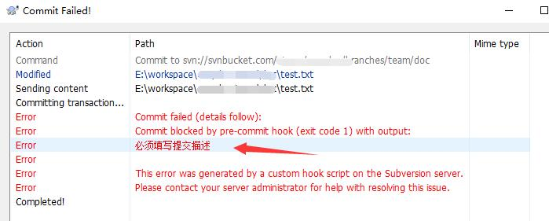
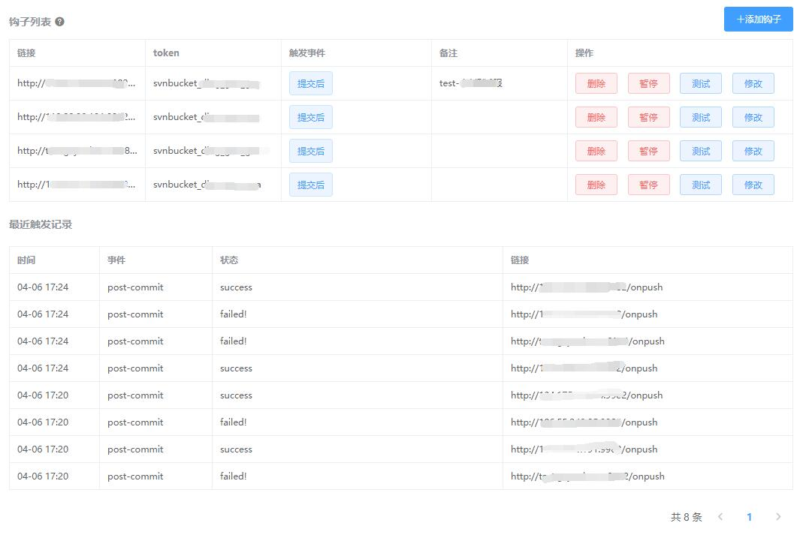

SVN 钩子介绍
钩子是什么，有什么用？SVN有哪些钩子，可以用来做什么，本篇将为大家解答。
SVN 钩子，英文叫 hooks ，钩子这个说法可能有些人觉得太玄乎，实际上它就是一个回调而已，当某个事件发生后会回调告诉你。
本篇讲解的是如何在 Linux 服务器上配置钩子，如果你是使用 SVNBucket 则可以在 web 端进行可视化配置钩子，参考SVNBucket钩子配置教程
SVN的钩子有很多，他们存放在服务端的/hooks目录:
上图中，我们看到文件后缀都是以.tmpl结尾，这些是模版文件，都是不会生效的，如果你想要某个钩子生效，只需要把.tmpl去掉就可以了。
他们都是 shell 脚本，如果是在windows上，则这个脚本的后缀应该是 exe/bat
虽然上图中有9个钩子脚本，但是常用的只有两个：
- 提交代码前触发的钩子
pre-commit - 提交代码后触发的钩子
post-commit
提交前的钩子，最经典的应用就是用来检查是否有填写提交描述（commit log），
1 |
|
如果你使用的是 TortoiseSVN 客户端，提示大概如下：

而提交后的钩子（post-commit）最经典的应用就是自动化更新服务器代码。
例如在代码提交后，我们可以判断提交描述中是否有update，有则自动更新服务器上的代码并且重启服务器以便立刻生效，这个在开发中是非常有用的，可以节省大量的繁琐操作。
通常我们的 SVN 仓库跟我们的 web/app 服务器不在同个服务器上。所以我们可以配置钩子调用我们的一个 http 接口通知更新，如下：
1 |
|
你需要提供一个 http 接口，这个接口在收到调用后判断是否需要更新，然后可以执行 svn update 命令去更新你的代码目录，然后执行重启服务的命令。
如果你不会编写 http 接口，可以参考下 SVNBucket钩子配置教程 ，里面提供更新、重启代码
在上面的钩子脚本中，我们给接口传递了 repos 和 rev 参数，没有提交描述，这样就没办判断否包含update字符来决定是否更新服务器。
要获得提交描述也很简单，我们在脚本中调用 svnlook 命令去获取描述内容就可以，如下：
1 |
|
还有更高级的判断方式是，判断提交者是否为指定用户、是否更新了某个文件/目录。
这需要调用更多的命令去查询这些信息，这里我们就不再深入了。
你也可以使用 SVNBucket，它提供了可视化的钩子配置界面，可以判断提交者、提交描述、变动文件，请参考 SVNBucket钩子配置教程

可配置多个触发链接，可查看触发log，可暂停
